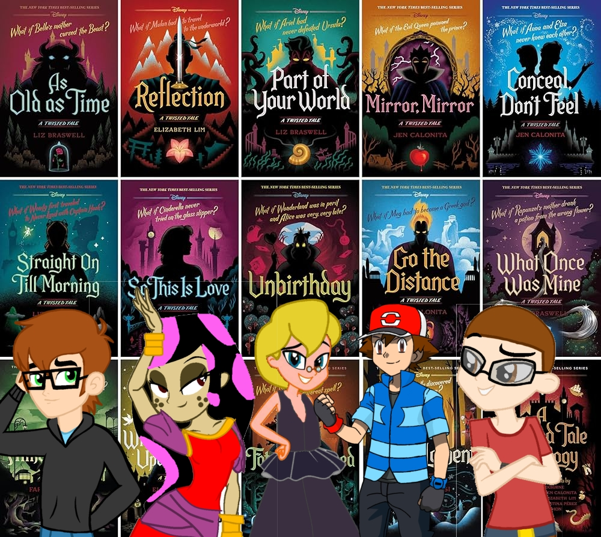

Once Upon a Toontopia

Cream and Maria's Adventures of Disney's Sing Along Songs

Alex and Jose's What if Adventures

Alex's Twisted Tales Adventures
Grupos
Final Ohanna Avengers

Explora las historias épicas de Toontopia